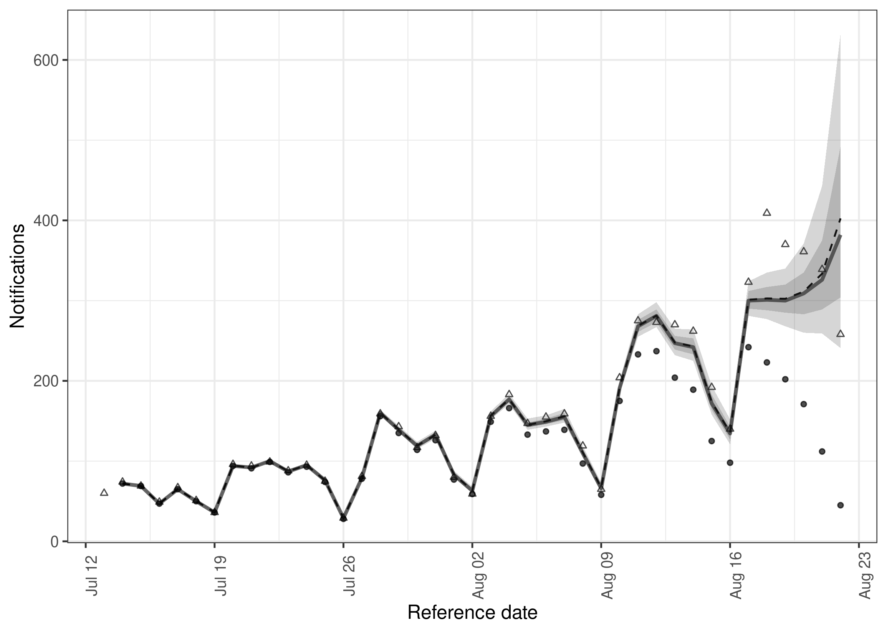
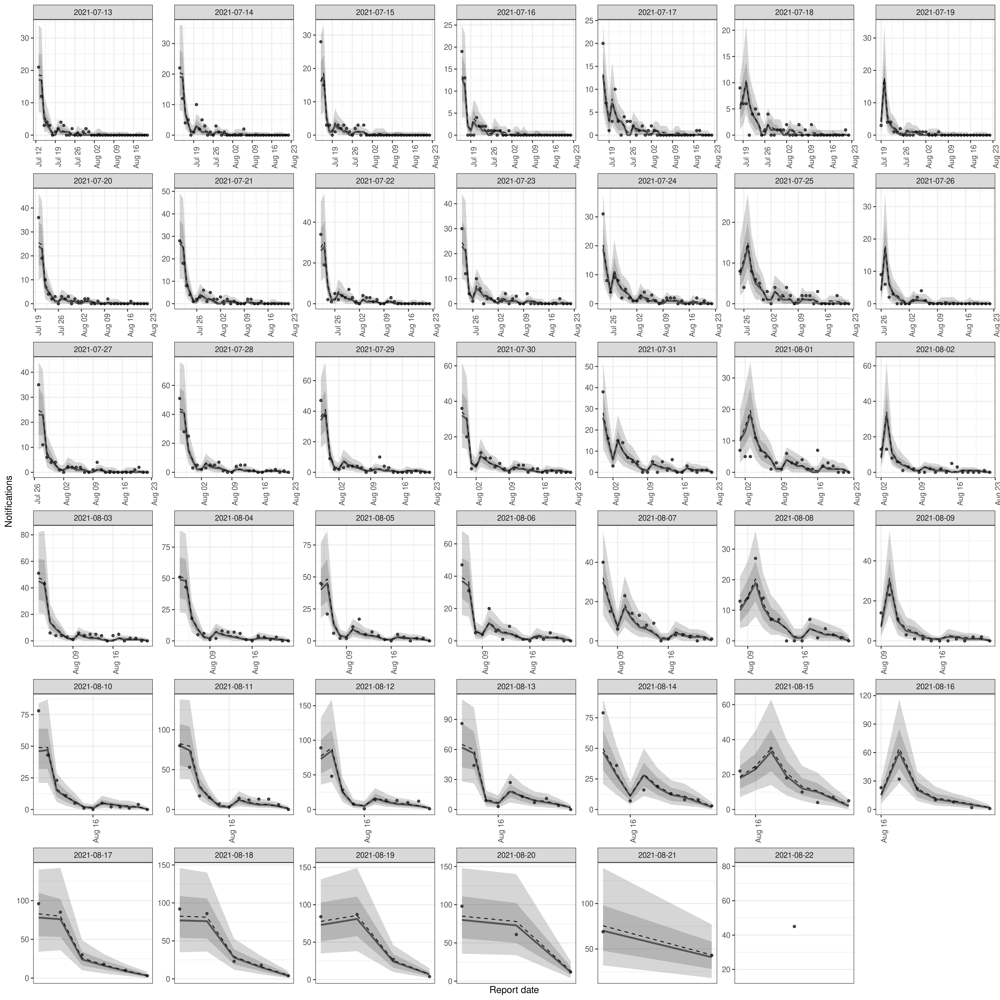

Tools to enable flexible and efficient hierarchical nowcasting of right-truncated epidemiological time-series using a semi-mechanistic Bayesian model with support for a range of reporting and generative processes. Nowcasting, in this context, is gaining situational awareness using currently available observations and the reporting patterns of historical observations. This can be useful when tracking the spread of infectious disease in real-time: without nowcasting, changes in trends can be obfuscated by partial reporting or their detection may be delayed due to the use of simpler methods like truncation. While the package has been designed with epidemiological applications in mind, it could be applied to any set of right-truncated time-series count data.
Getting started and learning more
This README is a good place to get started with epinowcast, in particular the following installation and quick start sections. As you make use of the package, or if your problem requires a richer feature set than presented here, we also provide a range of other documentation, case studies, and spaces for the community to interact with each other. Below is a short list of current resources.
Package website: This includes a function reference, model outline, and case studies making use of the package. This site refers to the release version of our package which can be installed from our Universe or from the latest GitHub release (see installation instructions). The development version of our documentation (corresponding to our
mainbranch on GitHub) is available here.Organisation website: This includes links to our other resources as well as guest posts from community members and schedules for any related seminars being run by community members.
Directory of example scripts: Not as fleshed out as our complete case studies these scripts are used during package development and each showcase a subset of package functionality. Often newly introduced features will be explored here before surfacing in other areas of our documentation.
Community forum: Our community forum is where development of methods and tools is discussed, along with related research from our members and discussions between users. If you are interested in real-time analysis of infectious disease this is likely a good place to start regardless of if you end up making use of
epinowcast.
Installation
Installing the package
Install the latest released version of the package with:
install.packages("epinowcast", repos = "https://epinowcast.r-universe.dev")Alternatively, install the development version (whilst we strive to limit breaking changes or the introduction of bugs during development this version may contain both) from GitHub using the following,
remotes::install_github("epinowcast/epinowcast", dependencies = TRUE)Historical package releases can be installed from GitHub using remotes by adding the release tag as in the following example (which installs 0.2.0),
remotes::install_github("epinowcast/epinowcast", dependencies = TRUE, ref = "v0.2.0")Note: A similar method can be used to install a particular commit of the package which may be useful for some users who are unable to use a fixed release but concerned about the stability of their dependencies.
Installing CmdStan
If you don’t already have CmdStan installed then, in addition to installing epinowcast, it is also necessary to install CmdStan using cmdstanr’s install_cmdstan() function to enable model fitting in epinowcast. A suitable C++ toolchain is also required. Instructions are provided in the Getting started with cmdstanr vignette. See the cmdstanr documentation for further details and support.
cmdstanr::install_cmdstan()Note: This install process can be sped up using the cores argument and past versions can be installed using the version argument (which may be useful if install historical package releases).
Docker
As an alternative to local installation we provide a Docker image with epinowcast and all dependencies installed. This can be used to run epinowcast without installing dependencies locally. The image is available here.
Quick start
In this quick start, we use the example of COVID-19 hospitalisations in Germany to demonstrate the specification and fitting of a simple nowcasting model using epinowcast. Examples using more complex models are available in the package vignettes and in the papers referenced in the literature vignette.
Package
In addition to epinowcast, this quick start makes use of data.table and ggplot2, which are both installed when epinowcast is installed.
Data
Nowcasting of right-truncated case counts involves the estimation of reporting delays for recently reported data. For this, we need to count cases both by when they occurred (often called “reference date”) and by when they were reported (often called “report date”). Then, the difference between the reference date and the report date is the reporting delay. For this quick start, we use data sourced from the Robert Koch Institute via the Germany Nowcasting hub. The data represent hospitalisation counts by date of positive test and date of test report in Germany up to October 1, 2021.
We first filter for a snapshot of retrospective data available 40 days before October 1, 2021 that contains 40 days of data. Then, we create the nowcast target which is the latest available hospitalisations by date of positive test. This will allow us to visualise how our nowcast made at the time compares to what was ultimately reported.
nat_germany_hosp <-
germany_covid19_hosp[location == "DE"][age_group %in% "00+"] |>
enw_filter_report_dates(latest_date = "2021-10-01")
retro_nat_germany <- nat_germany_hosp |>
enw_filter_report_dates(remove_days = 40) |>
enw_filter_reference_dates(include_days = 40)
retro_nat_germany
#> reference_date location age_group confirm report_date
#> 1: 2021-07-13 DE 00+ 21 2021-07-13
#> 2: 2021-07-14 DE 00+ 22 2021-07-14
#> 3: 2021-07-15 DE 00+ 28 2021-07-15
#> 4: 2021-07-16 DE 00+ 19 2021-07-16
#> 5: 2021-07-17 DE 00+ 20 2021-07-17
#> ---
#> 857: 2021-07-14 DE 00+ 72 2021-08-21
#> 858: 2021-07-15 DE 00+ 69 2021-08-22
#> 859: 2021-07-13 DE 00+ 59 2021-08-21
#> 860: 2021-07-14 DE 00+ 72 2021-08-22
#> 861: 2021-07-13 DE 00+ 59 2021-08-22This data is already in a format that can be used with epinowcast, as it contains
- a reference date (column
reference_date): the date of the observation, in this example the date of a positive test - a report date (column
report_date): the date of report for a given set of observations by reference date - a count (column
confirm): the total (i.e. cumulative) number of hospitalisations by reference date and report date.
The package also provides a range of tools to convert data from line list, incidence, or other common formats into the required format (see Data converters).
latest_germany_hosp <- nat_germany_hosp |>
enw_latest_data() |>
enw_filter_reference_dates(remove_days = 40, include_days = 40)
head(latest_germany_hosp, n = 10)
#> reference_date location age_group confirm report_date
#> 1: 2021-07-13 DE 00+ 60 2021-10-01
#> 2: 2021-07-14 DE 00+ 74 2021-10-01
#> 3: 2021-07-15 DE 00+ 69 2021-10-01
#> 4: 2021-07-16 DE 00+ 49 2021-10-01
#> 5: 2021-07-17 DE 00+ 67 2021-10-01
#> 6: 2021-07-18 DE 00+ 51 2021-10-01
#> 7: 2021-07-19 DE 00+ 36 2021-10-01
#> 8: 2021-07-20 DE 00+ 96 2021-10-01
#> 9: 2021-07-21 DE 00+ 94 2021-10-01
#> 10: 2021-07-22 DE 00+ 99 2021-10-01Data preprocessing
Before modelling, the input data needs to be converted into the “reporting triangle” format (see our model description for details). We also need to determine metadata to facilitate the model specification. This includes the number of days of data to use for the reference and report modules, the maximum delay to consider, and, optionally, a grouping (i.e. age group, location, or both) of observations. We process reported data into the format required for epinowcast and return it in a data.table. At this stage, we need to specify a grouping (i.e age, location) if any.
pobs <- enw_preprocess_data(retro_nat_germany, max_delay = 40)
pobs
#> obs new_confirm latest
#> 1: <data.table[860x9]> <data.table[860x11]> <data.table[41x10]>
#> missing_reference reporting_triangle metareference metareport
#> 1: <data.table[0x6]> <data.table[41x42]> <data.table[41x9]> <data.table[80x12]>
#> metadelay time snapshots by groups max_delay max_date timestep
#> 1: <data.table[40x4]> 41 41 1 40 2021-08-22 dayThe returned output is in the form of a data.table with metadata stored as variables. It can be useful to check this output before specifying the model, just to make sure everything is as expected.
Model specification
The epinowcast package is designed to provide users with a flexible and customizable modelling framework. The package comes equipped with several modules that users can utilize to construct models, and also allows users to create their own modules. These ensures that models can be tailored to the user’s specific data and context.
Default nowcasting model
The default nowcasting model in epinowcast consists of three modules:
- A process (expectation) module that models the expected counts by date of reference (
reference_date) - A parametric reference reporting model which models the reporting delay distribution from the date of reference
- A non-parametric reporting model which models differences in the reporting delay distribution by date of report (
report_date), for example, day-of-the-week effects on the reporting delay.
In the following sections, we specify simple models for each of these modules. The appropriateness of these specifications will vary depending on your context. See our vignettes for further details on model specification and examples of more complex models.
Process model
A commonly used process model in nowcasting is to model the expected counts by date of reference via a geometric random walk as this acts as a minimally informed smoothing prior and thus gives a lot of weight to the observed data. This is the default process model in epinowcast. Users may also specify this model for themselves using the enw_expectation() function.
expectation_module <- enw_expectation(
~ 0 + (1 | day), data = pobs
)Here, day refers to the number of days from the start of the data.
As the underlying process model is an exponential growth rate model (), specifying a random effect (i.e.
(1 | day)) on the growth rate is equivalent to a geometric random walk on expected counts by reference date.
Reporting model by reference date
Our baseline assumption for the reporting delay is that it is log-normally distributed, and static over time and strata. We can specify this model using the enw_reference() function,
reference_module <- enw_reference(~1, distribution = "lognormal", data = pobs)Note that the default distribution is log-normal, hence the distribution argument could be omitted here. Alternatively we could model the reporting delay non-parametrically using a hazard model (see our model description for details). The following is equivalent to a cox proportional hazards model with a single baseline hazard function.
np_reference_module <- enw_reference(
parametric = ~0, non_parametric = ~ 0 + delay, data = pobs
)Advanced users may wish to combine parametric and non-parametric reference date reporting models. For example, we could model the reporting delay as log-normal for delays up to 10 days and then use a hazard model for longer delays.
Reporting effects by report date
Even where there is evidence that reporting processes can be approximated by a single distribution, there may be additional reporting effects that are not captured by the reference model. For example, reporting may be lower on weekends or holidays. We can specify a model for these effects using a hazard formulation (which captures the conditional relationship between different reporting delays, see our model description for details) using the enw_report() function. Here we specify a model with a random effect for the day of the week to capture weekly seasonality in the reporting delay.
report_module <- enw_report(~ (1 | day_of_week), data = pobs)Precompiling the model
As epinowcast uses cmdstan to fit its models, it is necessary to first compile the model. This can be done using the enw_model() function. Note that this step can be left to epinowcast, but here we want to use multiple cores per chain to speed up model fitting and therefore compile the model with this feature turned on.
model <- enw_model(threads = TRUE)Bringing it all together: Fitting the model
We can now fit the model using the “No-U-Turn Sampler Markov chain Monte Carlo” method. This is a type of Hamiltonian Monte Carlo (HMC) algorithm and is the core fitting method used by cmdstan. The NUTS MCMC method is efficient, automatically tunes its own parameters and is robust to correlations between parameters, making it fast and effective at generating samples from the posterior distribution. We specify fitting options using enw_fit_opts() (note that the settings shown here are tuned for speed and may not be appropriate for many real world use cases). We also pass our preprocessed data (pobs), our pre-compiled model (model), and our model modules (expectation_module, reference_module, and report_module) to epinowcast, where they are combined and used to fit the model.
options(mc.cores = 2)
nowcast <- epinowcast(data = pobs,
expectation = expectation_module,
reference = reference_module,
report = report_module,
fit = enw_fit_opts(
save_warmup = FALSE, pp = TRUE,
chains = 2, threads_per_chain = 2,
iter_sampling = 500, iter_warmup = 500,
show_messages = FALSE
),
model = model
)The epinowcast object
The epinowcast() function returns an epinowcast object which includes diagnostic information, the data used for fitting, and the underlying CmdStanModel object.
nowcast
#> obs new_confirm latest
#> 1: <data.table[860x9]> <data.table[860x11]> <data.table[41x10]>
#> missing_reference reporting_triangle metareference metareport
#> 1: <data.table[0x6]> <data.table[41x42]> <data.table[41x9]> <data.table[80x12]>
#> metadelay time snapshots by groups max_delay max_date timestep
#> 1: <data.table[40x4]> 41 41 1 40 2021-08-22 day
#> fit data fit_args samples max_rhat
#> 1: <CmdStanMCMC[42]> <list[110]> <list[7]> 1000 1.01
#> divergent_transitions per_divergent_transitions max_treedepth
#> 1: 0 0 8
#> no_at_max_treedepth per_at_max_treedepth run_time
#> 1: 56 0.056 58.9Summarising and plotting the nowcast
The nowcast (the combination of currently observed and predicted unobserved data) can then be summarised using
nowcast |>
summary(probs = c(0.05, 0.95)) |>
head(n = 10)
#> reference_date report_date .group max_confirm location age_group confirm
#> 1: 2021-07-14 2021-08-22 1 72 DE 00+ 72
#> 2: 2021-07-15 2021-08-22 1 69 DE 00+ 69
#> 3: 2021-07-16 2021-08-22 1 47 DE 00+ 47
#> 4: 2021-07-17 2021-08-22 1 65 DE 00+ 65
#> 5: 2021-07-18 2021-08-22 1 50 DE 00+ 50
#> 6: 2021-07-19 2021-08-22 1 36 DE 00+ 36
#> 7: 2021-07-20 2021-08-22 1 94 DE 00+ 94
#> 8: 2021-07-21 2021-08-22 1 91 DE 00+ 91
#> 9: 2021-07-22 2021-08-22 1 99 DE 00+ 99
#> 10: 2021-07-23 2021-08-22 1 86 DE 00+ 86
#> cum_prop_reported delay prop_reported mean median sd mad q5
#> 1: 1 39 0 72.000 72 0.0000000 0.0000 72
#> 2: 1 38 0 69.056 69 0.2385811 0.0000 69
#> 3: 1 37 0 47.074 47 0.2731274 0.0000 47
#> 4: 1 36 0 65.208 65 0.4614639 0.0000 65
#> 5: 1 35 0 50.280 50 0.5439631 0.0000 50
#> 6: 1 34 0 36.247 36 0.5002412 0.0000 36
#> 7: 1 33 0 94.524 94 0.7429509 0.0000 94
#> 8: 1 32 0 91.776 92 0.9058944 1.4826 91
#> 9: 1 31 0 100.188 100 1.1392778 1.4826 99
#> 10: 1 30 0 87.357 87 1.2202623 1.4826 86
#> q95 rhat ess_bulk ess_tail
#> 1: 72 NA NA NA
#> 2: 70 1.0010387 915.0611 918.7423
#> 3: 48 0.9994211 960.8533 950.5282
#> 4: 66 1.0018759 852.0556 898.9818
#> 5: 51 0.9997491 1010.2418 962.3060
#> 6: 37 1.0004014 975.3127 931.8668
#> 7: 96 0.9991346 895.3525 931.4309
#> 8: 93 0.9992502 975.4180 931.7529
#> 9: 102 0.9989709 1045.2368 999.2705
#> 10: 90 0.9987151 1074.8555 838.6333Similarly, the summarised nowcast can be plotted against the latest observed data using
plot(nowcast, latest_obs = latest_germany_hosp)
Plotting posterior predictions
Plotting posterior predictions can be a useful way of assessing performance and checking that the model is capturing the underlying data generation process adequately. We can do this directly on the output of epinowcast() using
plot(nowcast, type = "posterior") +
facet_wrap(vars(reference_date), scale = "free")
Using package functions rather than S3 methods
Rather than using S3 methods supplied for epinowcast() directly, package functions can also be used to extract nowcast posterior samples, summarise them, and then plot them. This is demonstrated here by plotting the 7 day incidence for hospitalisations.
# extract samples
samples <- summary(nowcast, type = "nowcast_samples")
# Take a 7 day rolling sum of both samples and observations
cols <- c("confirm", "sample")
samples[, (cols) := lapply(.SD, frollsum, n = 7),
.SDcols = cols, by = ".draw"
][!is.na(sample)]
#> reference_date report_date .group max_confirm location age_group confirm
#> 1: 2021-07-20 2021-08-22 1 94 DE 00+ 433
#> 2: 2021-07-20 2021-08-22 1 94 DE 00+ 433
#> 3: 2021-07-20 2021-08-22 1 94 DE 00+ 433
#> 4: 2021-07-20 2021-08-22 1 94 DE 00+ 433
#> 5: 2021-07-20 2021-08-22 1 94 DE 00+ 433
#> ---
#> 33996: 2021-08-22 2021-08-22 1 45 DE 00+ 1093
#> 33997: 2021-08-22 2021-08-22 1 45 DE 00+ 1093
#> 33998: 2021-08-22 2021-08-22 1 45 DE 00+ 1093
#> 33999: 2021-08-22 2021-08-22 1 45 DE 00+ 1093
#> 34000: 2021-08-22 2021-08-22 1 45 DE 00+ 1093
#> cum_prop_reported delay prop_reported .chain .iteration .draw sample
#> 1: 1 33 0 1 1 1 433
#> 2: 1 33 0 1 2 2 433
#> 3: 1 33 0 1 3 3 433
#> 4: 1 33 0 1 4 4 436
#> 5: 1 33 0 1 5 5 434
#> ---
#> 33996: 1 0 1 2 496 996 1777
#> 33997: 1 0 1 2 497 997 1974
#> 33998: 1 0 1 2 498 998 1911
#> 33999: 1 0 1 2 499 999 2164
#> 34000: 1 0 1 2 500 1000 2024
latest_germany_hosp_7day <- copy(latest_germany_hosp)[
,
confirm := frollsum(confirm, n = 7)
][!is.na(confirm)]
# Summarise samples
sum_across_last_7_days <- enw_summarise_samples(samples)
# Plot samples
enw_plot_nowcast_quantiles(sum_across_last_7_days, latest_germany_hosp_7day)Here we see that the model is underestimating the incidence of hospitalisations that were ultimately reported. There are a range of potential reasons for this, the first being that the process model does not fully capture the trend or day of the week periodicity present in the data. See our case study vignettes for ideas on how deal with such issues.
Citation
If you use epinowcast in your work, please consider citing it using the following,
citation("epinowcast")To cite package ‘epinowcast’ in publications use:
Abbott S, Lison A, Funk S, Pearson C, Gruson H, Guenther F (2021). “epinowcast: Flexible hierarchical nowcasting.” Zenodo. doi:10.5281/zenodo.5637165 https://doi.org/10.5281/zenodo.5637165, https://github.com/epinowcast/epinowcast.
A BibTeX entry for LaTeX users is
@Article{, title = {epinowcast: Flexible hierarchical nowcasting}, author = {Sam Abbott and Adrian Lison and Sebastian Funk and Carl Pearson and Hugo Gruson and Felix Guenther}, year = {2021}, journal = {Zenodo}, doi = {10.5281/zenodo.5637165}, url = {https://github.com/epinowcast/epinowcast}, }
If making use of our methodology or the methodology on which ours is based, please cite the relevant papers from our model outline.
How to make a bug report or feature request
Please briefly describe your problem and what output you expect in an issue. If you have a question, please don’t open an issue. Instead, ask on our Q and A page. See our contributing guide for more information.
Contributing
We welcome contributions and new contributors! We particularly appreciate help on priority problems in the issues. Please check and add to the issues, and/or add a pull request. See our contributing guide for more information.
If interested in expanding the functionality of the underlying model note that epinowcast allows users to pass in their own models meaning that alternative parameterisations, for example altering the forecast model used for inferring expected observations, may be easily tested within the package infrastructure. Once this testing has been done alterations that increase the flexibility of the package model and improves its defaults are very welcome via pull request or other communication with the package authors. Even if not wanting to add your updated model to the package please do reach out as we would love to hear about your use case.
Code of Conduct
Please note that the epinowcast project is released with a Contributor Code of Conduct. By contributing to this project, you agree to abide by its terms.